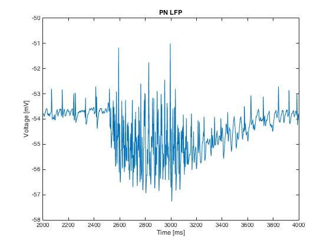

This is the readme for the model code accompanying the paper Chen, Jen-Yung, et al. "Learning modifies odor mixture processing to improve detection of relevant components." Journal of Neuroscience 35.1 (2015): 179-197. doi: 10.1523/JNEUROSCI.2345-14.2015 Known to work with: linux (ubuntu 12.04), gcc 4.6.3, matlab 2012b and MAC OS X 10.11.6, g++ clang-800.0.42.1, matlab R2015a Compilation and running: ----------------------- make Plotting the result: ------------------- make plot Output: ------ LFP.png Output used to generate LFP as in Fig. 5A: 